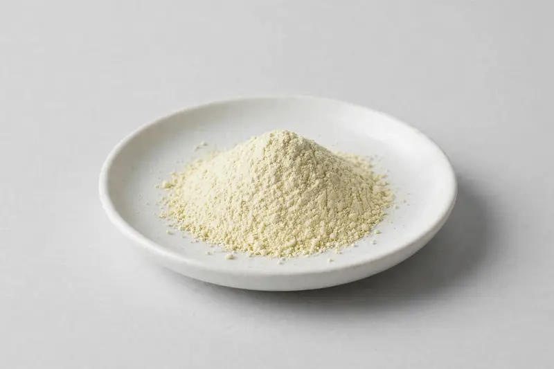

Hesperidin (Citrus spp.) — a citrus-derived flavonoid powder supplied for capsule, tablet and powdered-beverage formulations.

Overview
Hesperidin is a flavone glycoside occurring in citrus peel and related tissues, widely traded as an off-white to pale tan powder. Buyers specify it for citrus-flavonoid blends, capsules and functional beverage premixes. As a Xi'an-based trading company sourcing through vetted partner producers, we take your target assay, test method and particle requirements, confirm feasibility honestly, and coordinate supply and documentation accordingly.
Specifications below reflect commonly requested options in the market — not a stock list. Share your target spec and we'll confirm exactly what we can supply, honestly.
| Specification | Details |
|---|---|
| Botanical identity | Hesperidin, citrus-derived flavonoid (flavanone glycoside) powder |
| Marker compound | Hesperidin — commonly requested: 90-98% (HPLC); lower standardized grades also traded for blend work |
| Appearance | Fine powder, color typical of the extract |
| Mesh size | Typically 80–100 mesh (confirm per inquiry) |
| Testing | COA/TDS arranged on request; scope agreed per your spec |
Applications
Documentation
We don't claim in-house labs or certifications we don't hold. COA and TDS documents can be arranged on request, and testing scope is agreed against your specification before supply.
FAQ
Related products
Echinacea purpurea
Key marker: Echinacoside
View specs →Valeriana officinalis
Key marker: Valerenic Acids
View specs →Trigonella foenum-graecum
Key marker: Saponins
View specs →Betaine (trimethylglycine)
Key marker: Betaine 96-99%
View specs →Theobroma cacao
Key marker: Theobromine 10-20%
View specs →Send your target spec and volumes — we'll respond with a tailored quotation.
Request a Quote